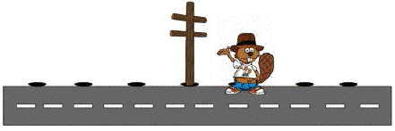
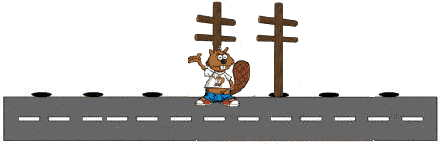
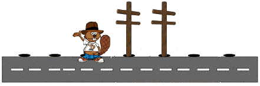
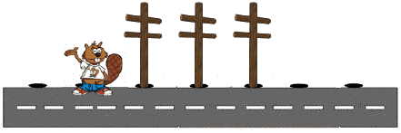

Les ouvriers de la Société des Castors Travailleurs suivent des règles très précises leur indiquant quand planter des poteaux, mais aussi quand porter un chapeau. Ces règles sont définies par le tableau suivant.
| Si je ne porte pas de chapeau | Si je porte un chapeau | |
| S'il n'y a pas de poteau derrière moi |
|
|
| S'il y a déjà un poteau derrière moi |
|
|
Au départ il n'y a aucun poteau le long de la route, et Castor se trouve quelque part sur cette route, sans chapeau sur la tête, comme illustré ci-dessous :
Question : À quoi ressemble la situation une fois que Castor s'arrête ?
La situation initiale est pas de chapeau, pas de poteau derrière moi
Les actions à exécuter sont : Planter un poteau, mettre un chapeau, faire un pas à droite.

La situation est devenue un chapeau, un poteau à gauche, pas de poteau derrière moi
Les actions à exécuter sont : Planter un poteau, enlever mon chapeau, faire un pas vers la gauche.

La situation est devenue pas de chapeau, un poteau derrière moi, un poteau à droite
Les actions à exécuter sont : Mettre mon chapeau, faire un pas vers la gauche.

La situation est devenue un chapeau, pas de poteau derrière moi, deux poteaux à droite
Les actions à exécuter sont : Planter un poteau, enlever mon chapeau, faire un pas vers la gauche.

La situation est devenue pas de chapeau, pas de poteau derrière moi, trois poteaux à droite
Les actions à exécuter sont : Planter un poteau, mettre un chapeau, faire un pas à droite.
La situation est devenue un chapeau, un poteau à gauche, un poteau derrière moi, deux poteaux à droite
Les actions à exécuter sont : Arrêter tout.
La dernière situation obtenue correspond au dessin de la réponse A. La réponse A est donc correcte.
La machine de Turing inventée en 1936 par Alan Turing est un modèle théorique constitué d'un simple ruban et d'une tête de lecture/écriture positionnée sur ce ruban. La machine est programmée en indiquant quel symbole écrire à la position courante et quel déplacement réaliser sur le ruban, en fonction du symbole actuellement sous la tête de lecture et de l'historique des actions précédentes. Ce modèle de calcul reste encore de nos jours une référence pour tous les langages de programmation modernes.
Ici, nous avons exactement affaire à une telle machine ! La route joue le rôle du ruban. Le castor, c'est la tête de lecture/écriture. Ce qu'il inscrit et lit ce sont des poteaux. La seule variation vis à vis du modèle classique que nous décrivons est ce petit chapeau. Qu'à cela ne tienne, il existe de nombreuses variantes des machines de Turing. Ici, la tête de lecture possède une information en plus qu'elle peut mettre à jour (enlever ou mettre le chapeau) et dont le statut courant intéragit avec ses décisions. Un résultat intéressant est que tous les langages de programmation séquentielle sont équivalents à la machine de Turing en termes de ce qu'ils permettrent de calculer d'un point de vue théorique (sans se soucier de la vitesse de calcul).